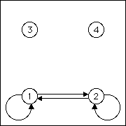
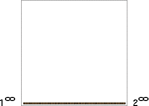

|
 |  |
| The IFS {T1, T2} has attractor the line segment
from | |||||
| Consequently, this matrix generates the indicated line. | |||||
| |||||
| Note the endpoints of the line are the
fixed points
| |||||
| Practice How many other single lines are possible with one step of memory? | |||||
| Test your ideas with the software before looking at the answers. |
Return to background directory.